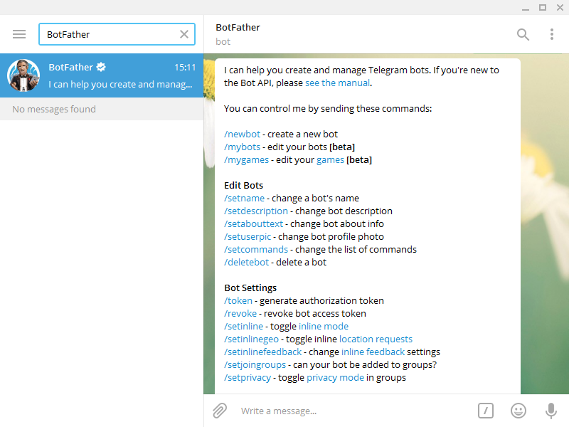

El Controlador (Driver) de Telegram está diseñado para enviar notificaciones utilizando el popular programa de mensajería Telegram. Las ventajas de utilizar Telegram son la rapidez con la que se reciben las notificaciones, ser un servicio sin cargo y la fácil gestión de grupos de notificaciones.
El Controlador de Telegram es opcional y se puede adquirir de Rapid SCADA. Se instala de acuerdo con la secuencia general de instalación de los drivers del Communicator.. El archivo es KpTelegram.dll y está en la biblioteca “Drivers” de controladores de Communicator.
Primero debe crear un bot para Telegram. Para hacerlo:
La configuración de las notificaciones como parte de un proyecto que usa Telegram se hace mediante la aplicación Administrator. Los pasos de la configuración son:
 y
y  .
.
 (Upload Configuration)..
(Upload Configuration)..
Si la configuración es correcta, su bot responderá a los comandos de Telegram, por ejemplo el comando /help o /info. Es necesario especificar las suscripciones (chats) en la configuración del driver.

Para obtener la ID y el nombre de la suscripción, envíe el comando /info en el Grupo de Telegram. Luego agregue los valores recibidos utilizando el formulario de configuración del dispositivo.
Método obsoleto: Para agregar o eliminar suscripciones al grupo, use los comandos /start y /stop con la contraseña generada anteriormente. Sin embargo, de forma predeterminada, los cambios de suscripciones están bloqueados. Para desbloquearlos, envíe el comando estándar número 2 con un valor de 1 por el Communicator. Ahora podrá añadir o eliminar suscripciones.
Para enviar un mensaje desde Rapid SCADA a un grupo de Telegram, vaya a Communicator – Línea creada para Telegram – Dispositivo creado para Telegram – click derecho – Send Command. Ahora, necesita enviar el comando binario número 1, contenienedo el nombre del grupo (o ID); texto del mensaje. Por ejemplo:
RapidScadaDemo; Mensaje de prueba.

El envío automático de notificaciones en caso de condiciones y eventos específicos se realiza mediante el Automatic Control Moduleopcional.